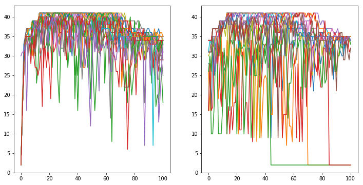
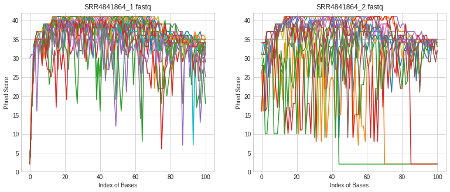
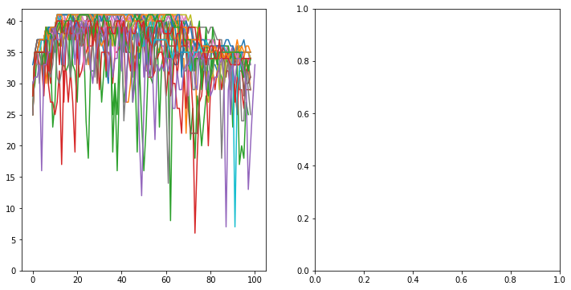
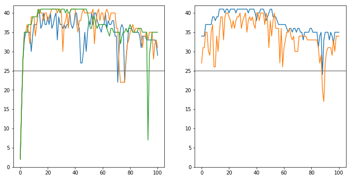

Quality Score¶
[4]:
import os
import matplotlib.pyplot as plt
[5]:
DIR_DAT_RAW = "/home/jovyan/work/Data/SRR4841864/rawdata"
DIR_DAT_TRIM = "/home/jovyan/work/Data/SRR4841864/trimmed_fastqs/"
DIR_CUR = "/home/jovyan/work/GitRepo/Duke_CBB520_HW2"
[6]:
os.listdir(DIR_DAT_RAW)
[6]:
['SRR4841864_1.fastq', 'SRR4841864.sra', 'SRR4841864_2.fastq']
[7]:
os.listdir(DIR_DAT_TRIM)
[7]:
['SRR4841864_1.trim.fastq']
Introduction to Quality Score in Sequencing¶
[9]:
def error_prob(quality):
qval = quality
return 10**(qval/-10.0)
print ("{0:^5} {1:^8} {2:^8} {3:^8}".format("Phred", "Prob of", "Phred+33", "Phred+64"))
print ("{0:^5} {1:^8} {2:^8} {3:^8}".format("score", "Error", "Ascii", "Ascii"))
for phred in range(0,42):
print ("{0:^5} {1:03.5f} {2:^8} {3:^8}".format(phred, error_prob(phred), chr(phred+33), chr(phred+64)))
Phred Prob of Phred+33 Phred+64
score Error Ascii Ascii
0 1.00000 ! @
1 0.79433 " A
2 0.63096 # B
3 0.50119 $ C
4 0.39811 % D
5 0.31623 & E
6 0.25119 ' F
7 0.19953 ( G
8 0.15849 ) H
9 0.12589 * I
10 0.10000 + J
11 0.07943 , K
12 0.06310 - L
13 0.05012 . M
14 0.03981 / N
15 0.03162 0 O
16 0.02512 1 P
17 0.01995 2 Q
18 0.01585 3 R
19 0.01259 4 S
20 0.01000 5 T
21 0.00794 6 U
22 0.00631 7 V
23 0.00501 8 W
24 0.00398 9 X
25 0.00316 : Y
26 0.00251 ; Z
27 0.00200 < [
28 0.00158 = \
29 0.00126 > ]
30 0.00100 ? ^
31 0.00079 @ _
32 0.00063 A `
33 0.00050 B a
34 0.00040 C b
35 0.00032 D c
36 0.00025 E d
37 0.00020 F e
38 0.00016 G f
39 0.00013 H g
40 0.00010 I h
41 0.00008 J i
[10]:
with open(os.path.join(DIR_DAT_RAW, "SRR4841864_1.fastq"), 'r') as fp:
for cnt, line in enumerate(fp):
line = line.strip()
if cnt % 4 == 0:
print("\n====================================================")
print("Line {0:^3}: {1}".format(cnt, line))
if cnt > 10:
break
====================================================
Line 0 : @SRR4841864.1 1 length=101
Line 1 : NGGCATACCAATGGGAAGAGCATGCGTGGGAATGGTATTCAAAAATCGAGAAAGAAGGATGCTGCTGCTGCTGCCGCTGTTGGGAAAGCTATAAAGGATGA
Line 2 : +SRR4841864.1 1 length=101
Line 3 : #1:BDFFFDHFHDGGBBGGHGIGGHEHGIFIHGFDB?FHGHIIIDDGFHGCHIIIIIIIIIHGCCCBBDFDFCCECCCCBCCCBBABBCCCCCCECCCCCC
====================================================
Line 4 : @SRR4841864.2 2 length=101
Line 5 : NAGCTTCGTTAAGACTTTGACTGGTAAGACCATCACTTTGGAAGTTGAATCTTCTGACACCATTGACAATGTCAAGTCCAAGATCCAAGACAAGGAAGGTA
Line 6 : +SRR4841864.2 2 length=101
Line 7 : #1=BDDDD?CFFFIIEFIFFHFIEFHIBHFFEFEFFIFEFIIFE<<?D?DGFIFIIGFEDFFIEGFFGGCC7@EFE7=AEEEDDDDDC@CCCBBBBBBBA>
====================================================
Line 8 : @SRR4841864.3 3 length=101
Line 9 : NTTATATCTATGAATGAATATGCATTGCTCTTCTGATACTATGGTATGAGAGGCCTTGGTAAAGGGCATCGATAACCGAAAGAATCATCCGCAGAGAAGTA
Line 10 : +SRR4841864.3 3 length=101
Line 11 : #1=?DDD?F?D8<FEGBABHBA<FHE93AAAHD<AFEG4?:ED<?DD<B4B918B@?FH8BDG?)BDFDHID@6;3=:59=<ACCCA@>CBB8?B253<:3
[11]:
with open(os.path.join(DIR_DAT_RAW, "SRR4841864_2.fastq"), 'r') as fp:
for cnt, line in enumerate(fp):
line = line.strip()
if cnt % 4 == 0:
print("\n====================================================")
print("Line {0:^3}: {1}".format(cnt, line))
if cnt > 10:
break
====================================================
Line 0 : @SRR4841864.1 1 length=101
Line 1 : TGTCATTTTCATTTTCGTTGTCGTTGTCGTTGTCATTGTCATTGTCGTTGTCGTTGTCGTTGTTGTTTTCATTGTCGTTGTCGTTGTCTTCATCGTTATTG
Line 2 : +SRR4841864.1 1 length=101
Line 3 : ==1A:BDDHFHHFIIIGIGHIAFGGCEHI?:?:CFD*:BDFHEH*?DHIBBF6<FAHBBCACEHFFH>CCBED;6@BC@=?AB@BCBCCCCDA@??BBBCC
====================================================
Line 4 : @SRR4841864.2 2 length=101
Line 5 : ACTTTCTCTTTCTACAGTTGGTAGCTCTTGGTGGCAATCTGGCGTAACATTTACGTCAAACAGAATTGTCACAGTTGTATTTGGAAGCCAAGGCTTTCAAA
Line 6 : +SRR4841864.2 2 length=101
Line 7 : ;1=BADD4:D2<4C<EA2C<B+AC<A:AB>>F=?)??*19:9*:00?D@ADD*?1(8--)==AA)77?=A###############################
====================================================
Line 8 : @SRR4841864.3 3 length=101
Line 9 : CAGACGATAACGATAAGCCTCAAAAAGTTGTGTCCTCTCATCATCCTCGATCACCAGTATATCATAAGCAAAGAATCTTCGATAATGATTTGGAAAAAAAG
Line 10 : +SRR4841864.3 3 length=101
Line 11 : 1=++2?A+++2<;?;1?97=+?CAABA:AA*1:=AB>==A=?BA#########################################################
Visualization of Phred Score¶
[19]:
fig, axes = plt.subplots(ncols=2, nrows=1, figsize=(12,6))
ax = axes[0]
with open(os.path.join(DIR_DAT_RAW, "SRR4841864_1.fastq"), 'r') as fp:
for cnt, line in enumerate(fp):
if cnt > 100:
break
if cnt % 4 == 3:
line = line.strip()
phred = [ord(char)-33 for char in line ]
prob = [error_prob(score) for score in phred]
ax.plot(phred)
ax = axes[1]
with open(os.path.join(DIR_DAT_RAW, "SRR4841864_2.fastq"), 'r') as fp:
for cnt, line in enumerate(fp):
if cnt > 64:
break
if cnt % 4 == 3:
line = line.strip()
phred = [ord(char)-33 for char in line ]
prob = [error_prob(score) for score in phred]
ax.plot(phred)

Visualization of Error Probability¶
[13]:
fig, axes = plt.subplots(ncols=2, nrows=1, figsize=(12,6))
ax = axes[0]
with open(os.path.join(DIR_DAT_RAW, "SRR4841864_1.fastq"), 'r') as fp:
for cnt, line in enumerate(fp):
if cnt > 64:
break
if cnt % 4 == 3:
line = line.strip()
phred = [ord(char)-33 for char in line ]
prob = [error_prob(score) for score in phred]
ax.plot(prob)
ax = axes[1]
with open(os.path.join(DIR_DAT_RAW, "SRR4841864_2.fastq"), 'r') as fp:
for cnt, line in enumerate(fp):
if cnt > 64:
break
if cnt % 4 == 3:
line = line.strip()
phred = [ord(char)-33 for char in line ]
prob = [error_prob(score) for score in phred]
ax.plot(prob)

[ ]:
[18]:
fig, axes = plt.subplots(ncols=2, nrows=1, figsize=(12,6))
ax = axes[0]
with open(os.path.join(DIR_DAT_TRIM, "SRR4841864_1.trim.fastq"), 'r') as fp:
for cnt, line in enumerate(fp):
if cnt > 100:
break
if cnt % 4 == 3:
line = line.strip()
phred = [ord(char)-33 for char in line ]
prob = [error_prob(score) for score in phred]
ax.plot(phred)
ax.set_ylim([0,42])
#ax = axes[1]
#with open(os.path.join(DIR_DAT_RAW, "SRR4841864_2.fastq"), 'r') as fp:
## for cnt, line in enumerate(fp):
# if cnt > 64:
# break
# if cnt % 4 == 3:
# line = line.strip()
# phred = [ord(char)-33 for char in line ]
# prob = [error_prob(score) for score in phred]
# ax.plot(phred)
[18]:
(0, 42)

[ ]:
Identify hight quality sequence pairs¶
[82]:
def fun(scores, threshold=25):
idx1 = 0
for idx2, s in enumerate(scores):
if s >= threshold:
continue
elif idx1 != idx2:
yield scores[idx1:idx2]
idx1 = idx2 + 1
else:
idx1 = idx2 + 1
list(fun([10, 30, 30, 10, 40, 40, 40, 10, 40, 10, 40, 40, 40]))
[82]:
[[30, 30], [40, 40, 40], [40]]
[83]:
def is_high_qual(scores):
for lst in fun(scores):
if len(lst) >= 50:
return True
return False
[89]:
fig, axes = plt.subplots(ncols=2, nrows=1, figsize=(12,6))
ax = axes[0]; ax.set_ylim([0,42]); ax.axhline(y=25, color="gray"); ax1 = ax
ax = axes[1]; ax.set_ylim([0,42]); ax.axhline(y=25, color="gray"); ax2 = ax
with open(os.path.join(DIR_DAT, "SRR4841864_1.fastq"), 'r') as fp:
for cnt, line in enumerate(fp):
if cnt > 100:
break
if cnt % 4 == 3:
line = line.strip()
phred = [ord(char)-33 for char in line ]
prob = [error_prob(score) for score in phred]
if is_high_qual(phred):
ax1.plot(phred)
with open(os.path.join(DIR_DAT, "SRR4841864_2.fastq"), 'r') as fp:
for cnt, line in enumerate(fp):
if cnt > 100:
break
if cnt % 4 == 3:
line = line.strip()
phred = [ord(char)-33 for char in line ]
prob = [error_prob(score) for score in phred]
if is_high_qual(phred):
ax2.plot(phred)
#ax.plot(phred)

[ ]: